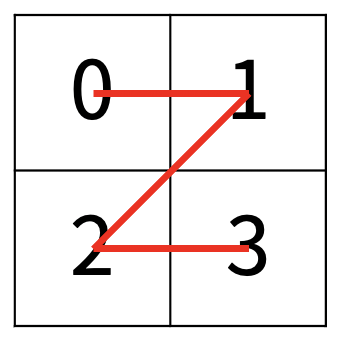
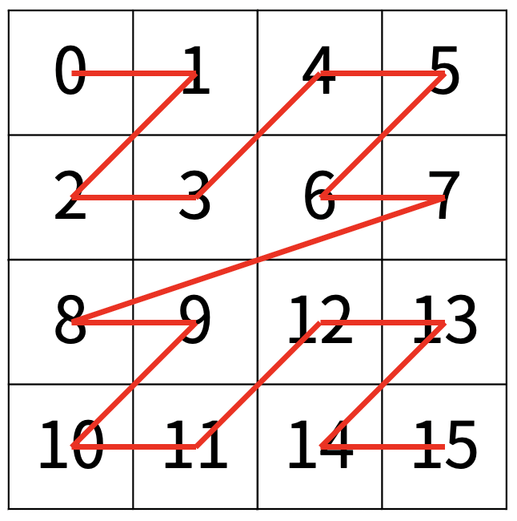
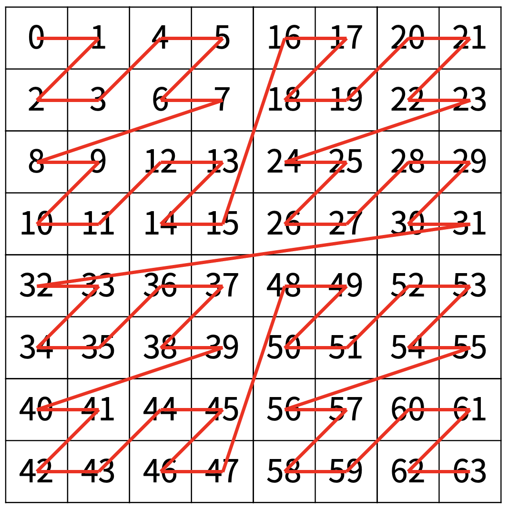

백준 1074. Z
- https://www.acmicpc.net/problem/1074
-
문제 :
한수는 크기가 2N × 2N인 2차원 배열을 Z모양으로 탐색하려고 한다. 예를 들어, 2×2배열을 왼쪽 위칸, 오른쪽 위칸, 왼쪽 아래칸, 오른쪽 아래칸 순서대로 방문하면 Z모양이다.

N > 1인 경우, 배열을 크기가 2N-1 × 2N-1로 4등분 한 후에 재귀적으로 순서대로 방문한다.
다음 예는 22 × 22 크기의 배열을 방문한 순서이다.

N이 주어졌을 때, r행 c열을 몇 번째로 방문하는지 출력하는 프로그램을 작성하시오.
다음은 N=3일 때의 예이다.

-
입력 :
첫째 줄에 정수 N, r, c가 주어진다. -
출력 :
r행 c열을 몇 번째로 방문했는지 출력한다. -
풀이 :
N = 3일 경우
2차원 배열을 4등분으로 나눠서 r행 c열이 어디에 속해있는 지 확인한다.
어디에 속해있는 지 확인했으면 4등분한 배열의 크기에 (속해있는 번호 - 1)을 곱한 값을 더한다. 입력 데이터가 3 4 6 일 경우 처음 4등분했을 때 4번 째에 속하므로 16 * (4 - 1)을 해서 48이다.
그 후 r과 c를 속해있는 번호의 가로, 세로 크기만큼 뺀다. 4등분한 배열의 좌표를 초기화하기 위해서이다. 입력 데이터가 3 4 6 일 경우 뺀 후는 r = 0, c = 2가 될 것이다.
계속해서 2차원 배열을 4등분으로 나눠서 r행 c열이 어디에 속해있는 지 확인한다.
r = 0, c = 2이므로 2번 째에 속해있다.
동일하게 배열의 크기만큼 더해준다. 4 * (2 - 1) = 4. 48 + 4 = 52.
r과 c의 좌표 또한 수정해준다. 2번 째에 속해있으므로 r은 그대로 두고 c는 가로 크기만큼 뺀다. r = 0, c = 2 - 2 = 0.
마지막으로 2차원 배열을 4등분으로 나눠서 r행 c열이 어디에 속해있는 지 확인한다.
이전과 같은 방식으로 하면 1번 째에 속해있고 1번 째의 경우 변경사항이 없으므로 그대로 둔다.
마지막 작업까지 완료했으면 답을 출력할 수 있다. 지금 든 예제의 경우 답은 52가 나올 것이다.